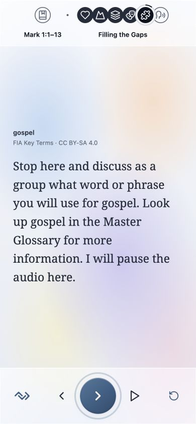

Familiarize · Internalize · Articulate
Understand Scripture.
Make it part of you.
A guided journey through Scripture, with space to reflect and discuss together.
HearUnderstandExpress
Open FIA
On your phone or computer.
Choose your passage language in the app.

Filling the Gaps
See a FIA guide preview
FIA guide · Mark 1:1–13 · Filling the Gaps